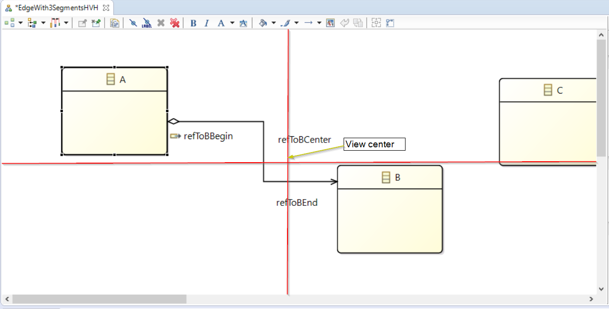

Preamble
Summary: Diagram mouse scroll zoom is based on mouse location instead of diagram editor view center
| Version |
Status |
Date |
Authors |
Changes |
| v0.1 |
DRAFT |
2016-07-26 |
pguilet |
Initial version. |
| v0.2 |
PROPOSAL |
2016-08-05 |
pguilet |
Initial version. |
Relevant tickets:
Introduction
Currently the mouse scroll zoom on a diagram works as the following:
- We do a scroll with the mouse when hitting CTRL keyboard key.
- The zoom is applied on the point at the center of the view
This make difficult to zoom to an element not around the center of the view because after the zoom, the element can be out of the screen and we will have to scroll to see it.
So to avoid to have to scroll after zooming, the zoom will be done on the point behind the mouse to zoom directly the element targeted. This point will be kept at its view location when possible.
Detailed Specification
The implications of a zoom done on the point behind the mouse location is the following :
- The diagram is zoomed (in or out)
- The view on the diagram is updated so the point behind the mouse is kept at the same view position if possible. We have different cases regarding the positioning of the zoomed point :
- Zoom expansion is done from the top left corner of the view. This is the view origin point. Positioning is done on two axis x et y. For each axis, the positioning can be :
- partial because the zoomed zone is near one or several boundaries of the diagram so you cannot scroll beyond. Zoom does not extend the diagram. The x or y coordinate is put as close as possible of the mouse location.
- or complete if there is enough space between the diagram boundaries and the zoomed point to have it without shifting it from the mouse location (usually this means we have scroll bars). For example, lets consider the following case were we zoom-in :

- If a zoom in is done in the left upper zone, the positioning will be partial for the x and y axis because with the zoom applied, we can’t extend the left and upper side of the diagram. Zoom is all about making a diagram bigger regarding a ratio and not modifying the original width and length. So instead of being under the mouse location, the original zoom point will be shifted to the right and bottom.
- If a zoom in is done in the left lower zone and is not enough to, the positioning will be partial for the x axis because with the zoom applied, we can’t extend the left side of the diagram. So instead of being under the mouse location, the original zoom point will be shifted to the right. But the positioning of the y axis will be complete because the lower side is not the boundary of the diagram and there is enough space below to do the positioning at mouse location even with the zoom.
- If a zoom in is done in the right lower zone, the positioning will be complete for the x and y axis because there is enough space below the lower side and after the right side of the view to do the positioning under the mouse without seeing diagram boundaries on view that would make a shift of the original zoom point.
- If a zoom in is done in the right upper zone, the positioning will be partial for the y axis because with the zoom applied, we can’t extend the upper side of the diagram. So instead of being under the mouse location, the original zoom point will be shifted to the bottom. But the positioning of the x axis will be complete because the lower side is not the boundary of the diagram and there is enough space below to do the centering even with the zoom.
***For a zoom-out, it works the same excepted that when boundaries are visible on the view after the zoom then the zoom point will be shifted towards top left location on the view instead of being expanded to the bottom right.
In case of a succession of mouse scroll, each scroll will be handled independently from the other.
We have different cases regarding a zoom done with more than one mouse scroll.
For zoom-in :
- Either the point we want to zoom in around is not near diagram boundary from a view viewpoint after the zoom applications. In this case a zoom in will keep the original point at the same view location.
- Or the zone we want to zoom in is closed to a diagram boundary visible on view after zoom applications. In this case, it is possible that we have we will have to readjust the mouse position by scrolling after some zoom-in to continue to zoom the wanted point because it will be shifted each zoom on a direction opposed to the diagram boundary visible on the view and if the zoom is strong then it can be put outside the view.
For zoom-out :
- Either the point we want to zoom out around is not near diagram boundary from a view viewpoint after the zoom applications. In this case a zoom out will keep the original point at the same view location.
- Or the zone we want to zoom out make the one ore more diagram boundaries visible on the screen after zoom applications. In this case, the zoomed point will be shifted to the top left locations regarding boundaries visible.
Backward Compatibility and Migration Paths
Documentation Changes
The User documentation will be updated to describe the possibility to zoom in or out with the mouse wheel and the keyboard key CTRL.
Tests and Non-regression strategy
- A test must be done for zoom-in and out when after zoom, no boundary is visible. (The zoomed point is kept under the mouse on the view).
- A test must be done when diagram boundaries are visible on the view after a zoom in. The zoomed point must be shifted at the right location.
- A test must be done when diagram boundaries are visible on the view after a zoom out. The zoomed point must be shifted at the right location.
Implementation choices and tradeoffs